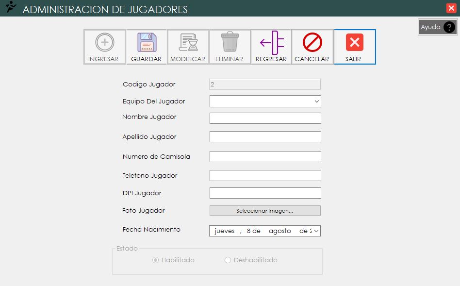
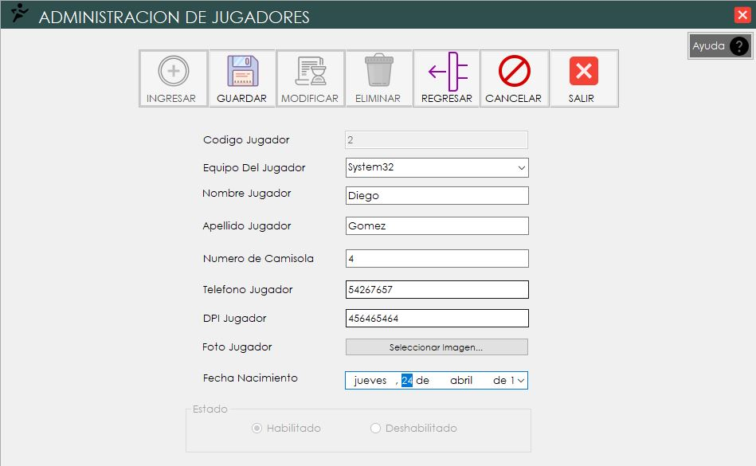
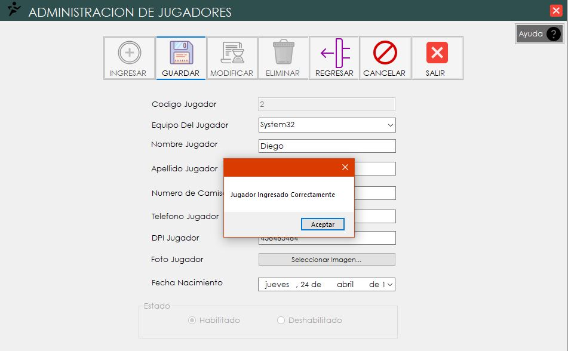
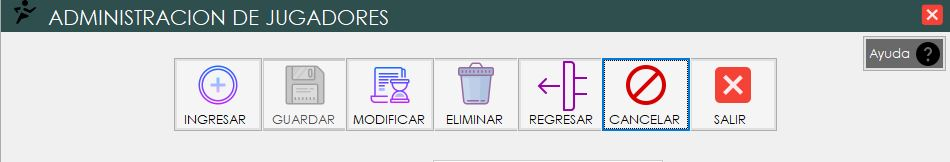
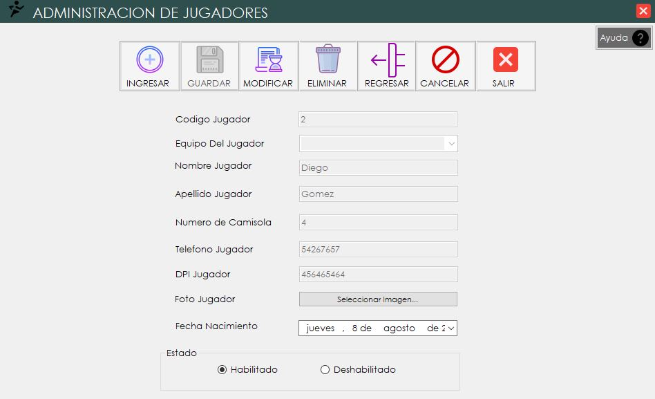
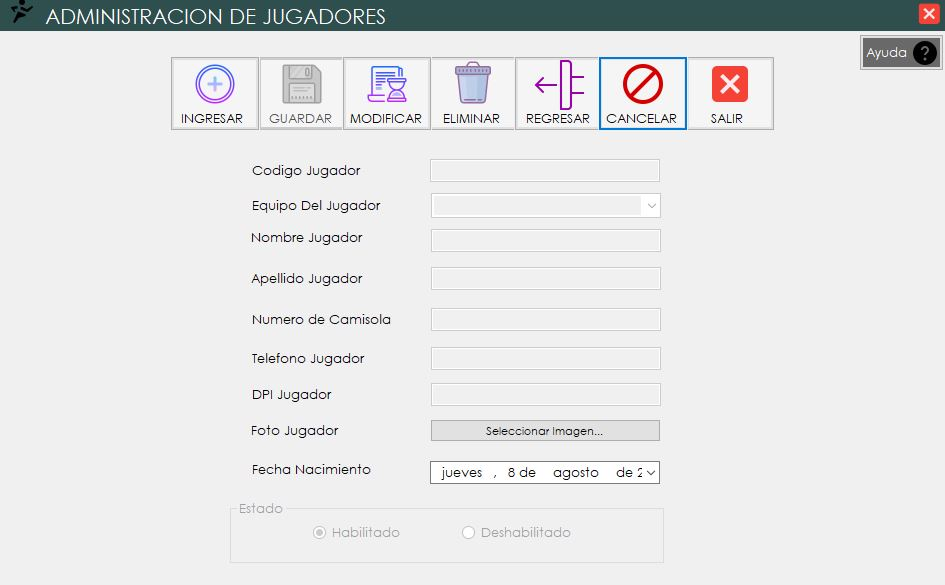

Mantenimientos
1. Ingresando al formulario de los Mantenimientos:

2. Al ingresar al formulario se llenan los datos correspondientes del formulario.

3. Al llenar todos los campos se da click en el boton de guardar para almacenar la informacion.

4. Luego de haber almacenado la informacion se habilitan los botones del navegador para poder modificar,eliminar,regresar o cancelar los datos ingresados anteriormente.

4. En el caso de querer modificar los datos ingresados o de los que ya estan almacenados se da click en el boton modificar para poder realizar los cambios necesarios.

5. Para poder regresar al formulario anterior se da click en boton regresar, o tambien de querer terminar el proceso y cerrar el formulario se da click en el boton de salir.
